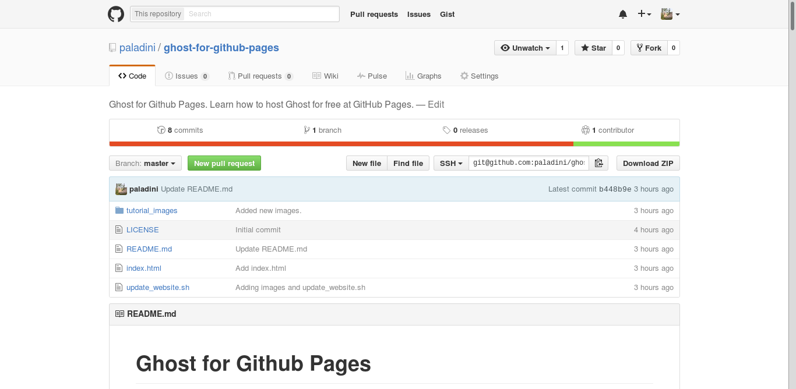

Recently I've read an awesome post on how to use the Ghost blogging plataform alongside with Github Pages - in other words, use Ghost with a free hosting.
The article in question can be found here, but the author don't clarify some important parts of the tutorial. Based on that, I've made an Github repository teaching how to get a free Ghost hosting on Github pages.

I also made an interesting script (that you can find in my repository) that allow you to update your website with a single line of code. The installation process keeps boring, but now it's very easy to update your website.
Check my Github repository here, hope these instructions can help you!